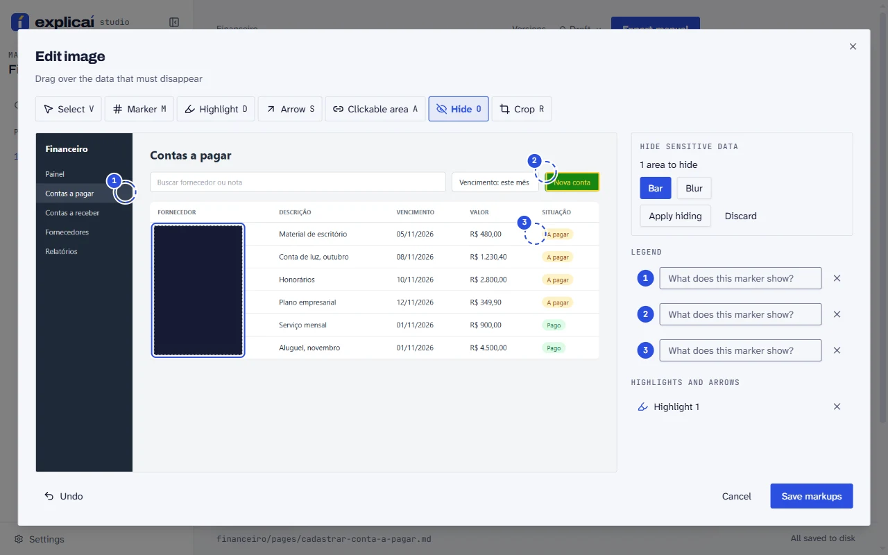
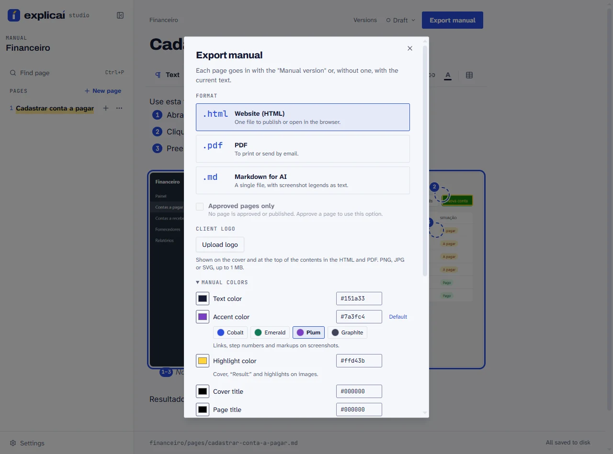
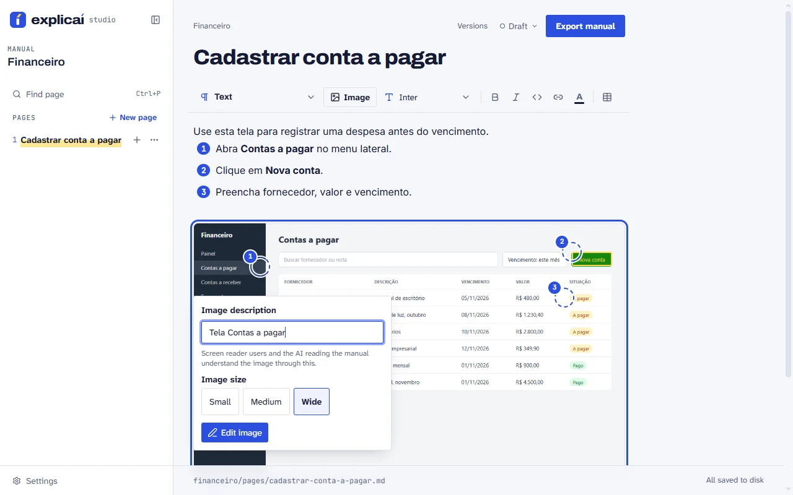
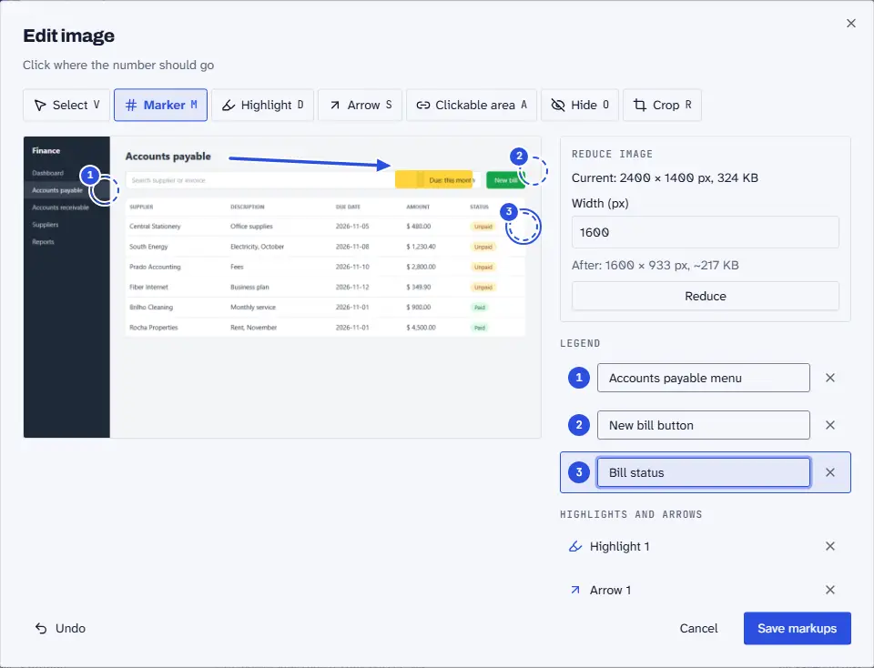

Review before you send.
Every page has a status: draft, in review, approved, published. Export can carry only the approved ones, and the “Manual version” marks what counts as final.
Explicaí / Features · Studio 0.2
Studio handles what comes after the paste: hiding sensitive data, dressing the manual in the client's brand, reviewing and exporting.
Select the area with the Hide tool (key O) and pick a bar or a blur. Studio burns the effect into the image pixels and deletes the original. No layer is left for someone to remove later.

In the export dialog you upload the logo and pick the colors and fonts. Each manual keeps its own theme, so one client's look never leaks into another's.

Full-screen shots are heavy and distracting. Crop what matters, choose how much room the image takes and shrink the file.

Numbered markers, highlights, arrows and clickable areas, with a caption for each number. The same markup shows in the editor, HTML and PDF.

And more
Every page has a status: draft, in review, approved, published. Export can carry only the approved ones, and the “Manual version” marks what counts as final.
One click makes the format. The PDF goes by email, the HTML opens in the browser and the Markdown comes out as a single file, with screenshot captions as text.
Alerts, a / menu with blocks, tables with row and column controls, text color and Ctrl+V to paste the screenshot.
Studio opens on localhost and saves to a folder of yours, as Markdown and images that fit in git. If another editor touches the page, Studio warns you instead of overwriting. MIT license.
npx explicai manuals
Needs Node 20.12 or newer.